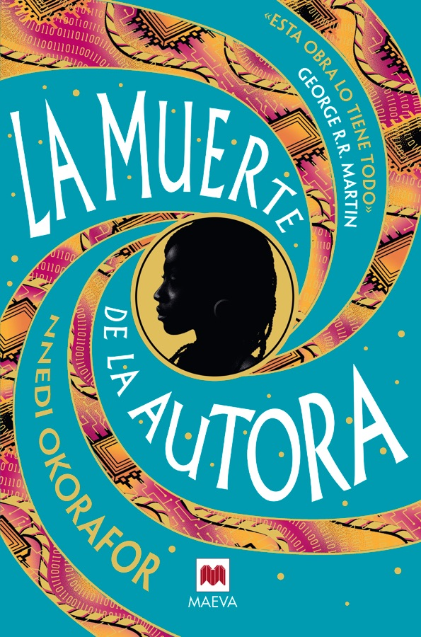
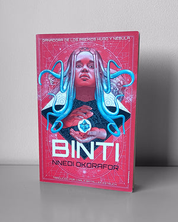
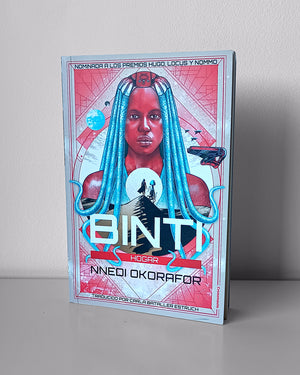
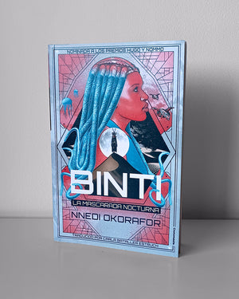
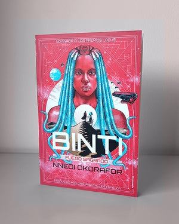
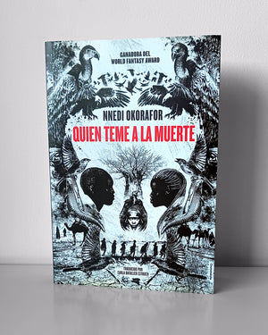
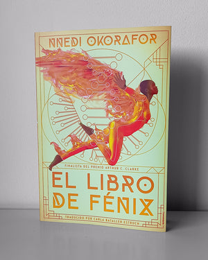
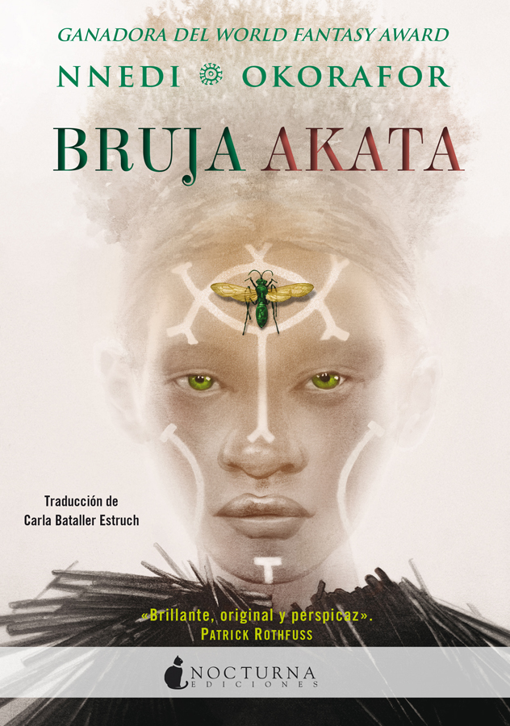
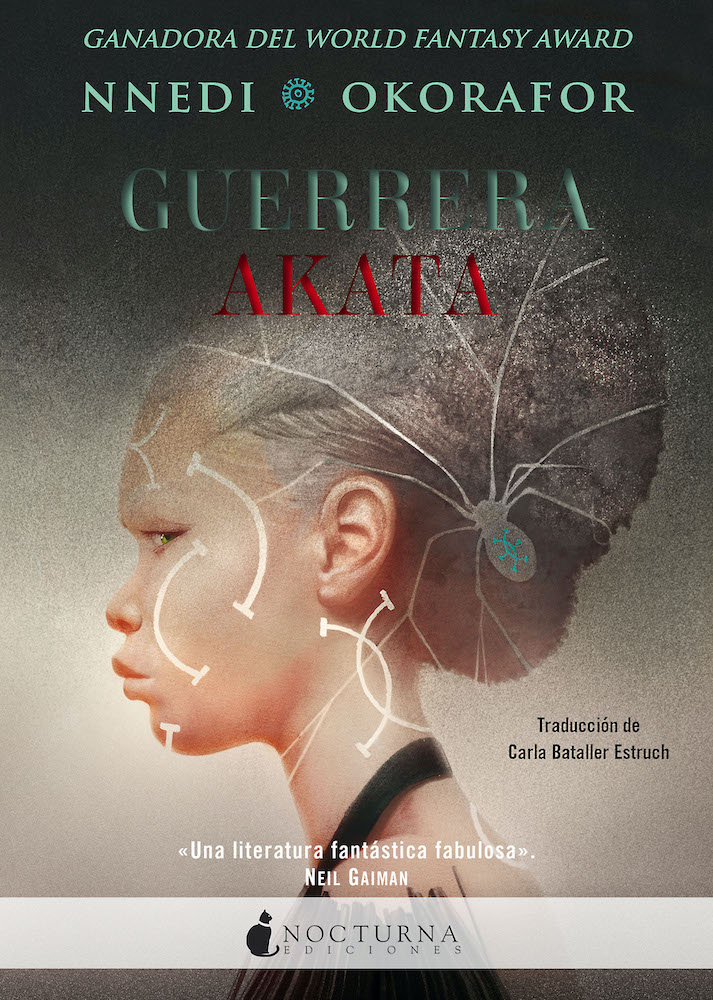
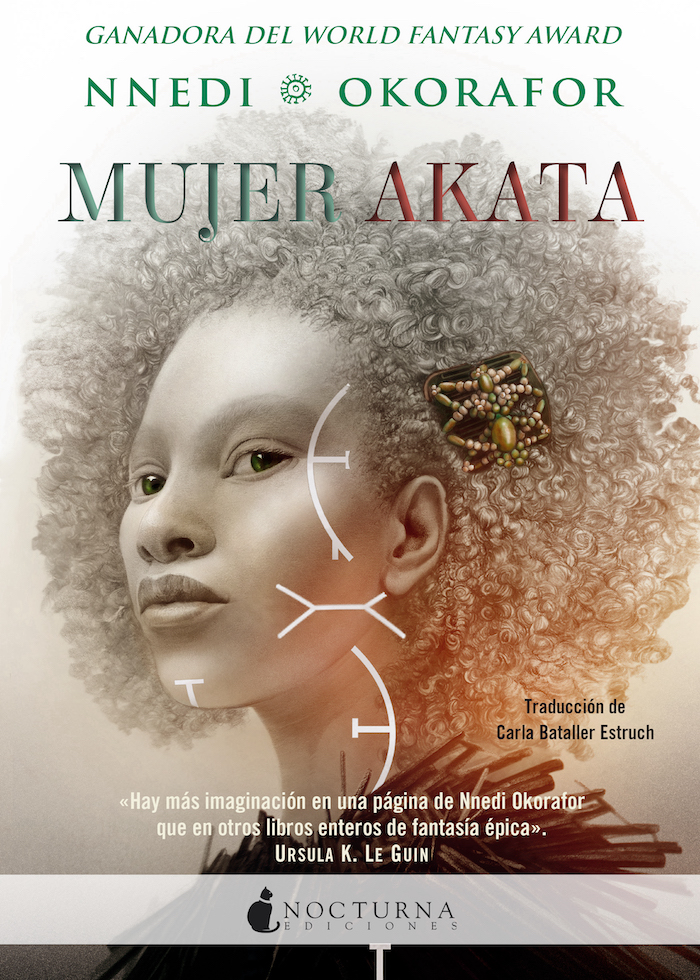

Una joven himba deja Namibia para estudiar en la universidad galáctica Oomza; Hugo y Nebula.
crononauta.es · Binti
Binti vuelve a la Tierra con su familia y descubre otra parte de su herencia.
crononauta.es · Binti: Hogar
Cierre de la trilogía: guerra entre himba y khoush, y Binti en medio.
crononauta.es · La mascarada nocturna
Relato breve que vuelve al universo de Binti.
crononauta.es · Fuego sagrado
África postapocalíptica: Onyesonwu, hija de una violación de guerra, descubre su poder; World Fantasy.
crononauta.es · Quién teme a la muerte
Precuela de Quién teme a la muerte: una mujer creada en laboratorio se rebela contra sus creadores.
crononauta.es · El libro de Fénix
Sunny, albina nigeroamericana, descubre que es una «persona leopardo» con poderes mágicos.
nocturnaediciones.com · Bruja Akata
Sunny y su grupo se enfrentan a una amenaza que podría destruir el mundo.
nocturnaediciones.com · Guerrera Akata
Cierre de la trilogía Akata: una misión en el mundo espiritual.
nocturnaediciones.com · Mujer AkataEn sus últimos tiempos, la humanidad cultivó un desdén creciente por su propia alma. Muchos dejaron de creer en la santidad del proceso creativo; quisieron eliminarlo y abrir paso a la automatización para que les hiciera el trabajo. Pero la cosa no salió tal y como los humanos querían o esperaban. La creatividad implicaba que había que experimentar, procesar, comprender la dicha y el dolor humanos. Para que un robot pudiera crear como una persona, la humanidad debía asegurarse de que una parte de ella pudiera vivir en nosotros.
3Los relatos contienen nuestra existencia; son como dioses. Y el hecho de que los creemos a partir de lo que experimentamos, escuchamos, pensamos, sentimos… es un recordatorio de la grandeza de estar vivo.
13Las historias prestan consistencia a las cosas. Hacen que estas cobren importancia, llevan a que sean, a que existan. Nuestros códigos están escritos de manera lineal. Nuestros protocolos están pensados para implementarse con un principio, un desarrollo y un final
9Te dabas cuenta de que estaba dándole vueltas a la historia, escuchando su eco, la manera en que crecía a su alrededor, en que se expandía por su interior. Mi cabeza siempre ha sido muy lógica, metódica. Es lo que me ha convertido en una buena ingeniera. Cuando existe la posibilidad de una conexión, yo la establezco. Zelu, en cambio… Zelu podía conectar con lo que era invisible. Escuchaba y, mientras lo procesaba, se le aparecían cosas que no estaban allí antes. Y podía ponerlo todo en palabras, de manera que todo el mundo lo viera
17la creación fluye en un doble sentido.
4jamás había dejado de soñar. Simplemente no sabía cómo convertir ese sueño en realidad.
15fogonazo de inspiración. Toda la novela. Lo único que tenía que hacer era sentarse a escribirla. No, aún no veía la historia al completo, desde el principio hasta el final, pero estaba allí, como un archivo comprimido. Si se ponía a escribir, podría extraerlo
5¿Acaso no dijo el poeta que «Lo que buscas te busca a ti»? Tú lo has dejado patente.
10pero a veces concentrarse en la peor parte del problema arrojaba los mejores resultados.
11Se había entregado a través de su escritura y muchas personas la habían disfrutado, habían aprendido, se habían entretenido e incluso habían madurado y se habían sanado con ella. Eso era hermoso. Pero, a la vez, también se había vuelto vulnerable. Y ser vulnerable podía llevar a que se encontrara en un peligro terrible.
1Está tan llena de sí misma que no sabe cuándo ha hecho que alguien pierda el sentido de la normalidad. Y se limita a dejarte allí, tambaleándote y preguntándote el porqué. Quizá esa sea la razón por la que la adoran de esa manera.
7Se espera de ti que sigas adelante. Viendo caer a la gente a la que quieres, una tras otra. Y sigues avanzando hasta que te llega el turno de caer y ya no estás y la gente te llora. A veces pienso que preferiría ser un puto robot. Sin dolor. Ni muerte. Ni finalidad alguna. Y sin tener que temer la vida. Sí.
6Ustedes siempre se inventan cosas sobre aquello que no les resulta familiar, lo muestran como algo terrible o que no está a su altura. Solo ven las cosas a través de la estrechez de su lente y de sus experiencias personales. Es su punto débil. Lo comprendo.
8reunirse cara a cara en vez de compartir la información de manera instantánea a través de redes privadas. Había algo en los encuentros físicos que asentaba la importancia de una cuestión. Se trataba de otro de los vestigios de la humanidad que seguíamos practicando.
16En sus últimos tiempos, la humanidad cultivó un desdén creciente por su propia alma. Muchos dejaron de creer en la santidad del proceso creativo; quisieron eliminarlo y abrir paso a la automatización para que les hiciera el trabajo. Pero la cosa no salió tal y como los humanos querían o esperaban. La creatividad implicaba que había que experimentar, procesar, comprender la dicha y el dolor humanos. Para que un robot pudiera crear como una persona, la humanidad debía asegurarse de que una parte de ella pudiera vivir en nosotros.
2Rellenamos los huecos, equilibramos los sesgos. A veces lo borrábamos todo y nos reinstalábamos. Nos renovábamos.
12su protagonista, que había comprendido en la profundidad de sus circuitos que el verdadero poder reside en la manera en la que lo controlas, no en su posesión
14No me interesa colonizar Marte —dijo—. Allí donde vaya y pase a sentirse como en casa, la humanidad aprenderá a ser infeliz otra vez. Me interesa más explorar
Una joven himba deja Namibia para estudiar en la universidad galáctica Oomza; Hugo y Nebula.
crononauta.es · BintiBinti vuelve a la Tierra con su familia y descubre otra parte de su herencia.
crononauta.es · Binti: HogarCierre de la trilogía: guerra entre himba y khoush, y Binti en medio.
crononauta.es · La mascarada nocturnaRelato breve que vuelve al universo de Binti.
crononauta.es · Fuego sagradoÁfrica postapocalíptica: Onyesonwu, hija de una violación de guerra, descubre su poder; World Fantasy.
crononauta.es · Quién teme a la muertePrecuela de Quién teme a la muerte: una mujer creada en laboratorio se rebela contra sus creadores.
crononauta.es · El libro de FénixSunny, albina nigeroamericana, descubre que es una «persona leopardo» con poderes mágicos.
nocturnaediciones.com · Bruja AkataSunny y su grupo se enfrentan a una amenaza que podría destruir el mundo.
nocturnaediciones.com · Guerrera AkataCierre de la trilogía Akata: una misión en el mundo espiritual.
nocturnaediciones.com · Mujer AkataEdiciones en castellano; enlaces comprobados (HTTP 200) el 24 oct 2026. Lagoon, Remote Control, Kabu Kabu y Noor no tienen edición en castellano localizada.